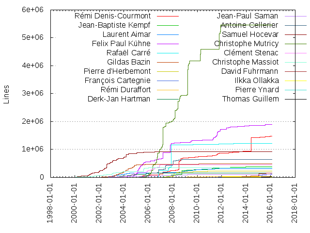
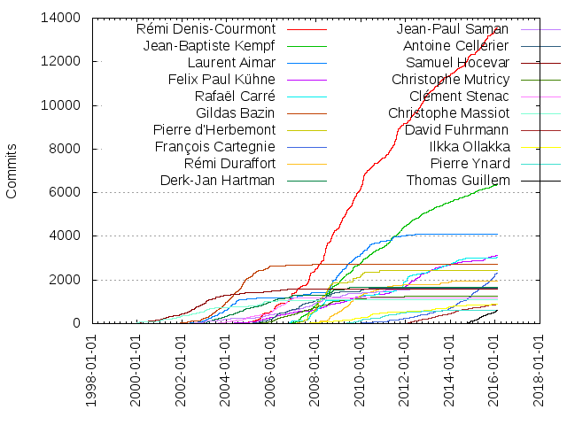

Authors
| Author | Commits (%) | + lines | - lines | First commit | Last commit | Age | Active days | # by commits |
|---|
| Rémi Denis-Courmont | 13548 (21.23%) | 1475937 | 1811232 | 2003-12-10 | 2016-02-03 | 4438 days, 11:31:59 | 2198 | 1 |
| Jean-Baptiste Kempf | 6357 (9.96%) | 390688 | 529885 | 2006-07-31 | 2016-02-02 | 3472 days, 20:01:12 | 1746 | 2 |
| Laurent Aimar | 4106 (6.43%) | 310412 | 202388 | 2002-04-24 | 2012-12-20 | 3893 days, 19:52:02 | 1032 | 3 |
| Felix Paul Kühne | 3116 (4.88%) | 1894244 | 2543926 | 2004-01-04 | 2016-02-02 | 4411 days, 19:20:04 | 1196 | 4 |
| Rafaël Carré | 3026 (4.74%) | 1224953 | 457291 | 2006-09-29 | 2016-02-03 | 3414 days, 17:47:19 | 883 | 5 |
| Gildas Bazin | 2725 (4.27%) | 481069 | 327372 | 2001-06-27 | 2011-01-06 | 3480 days, 13:14:34 | 859 | 6 |
| Pierre d'Herbemont | 2432 (3.81%) | 219390 | 162266 | 2007-03-01 | 2010-11-20 | 1360 days, 17:13:38 | 394 | 7 |
| François Cartegnie | 2312 (3.62%) | 116170 | 81928 | 2009-05-28 | 2016-01-24 | 2432 days, 2:00:49 | 792 | 8 |
| Rémi Duraffort | 1934 (3.03%) | 29803 | 45494 | 2007-12-11 | 2014-01-23 | 2235 days, 19:20:50 | 536 | 9 |
| Derk-Jan Hartman | 1649 (2.58%) | 163995 | 158539 | 2003-01-16 | 2009-06-30 | 2356 days, 11:47:25 | 676 | 10 |
| Jean-Paul Saman | 1627 (2.55%) | 109696 | 49093 | 2002-01-05 | 2015-10-17 | 5032 days, 18:53:34 | 635 | 11 |
| Antoine Cellerier | 1623 (2.54%) | 648819 | 439807 | 2004-04-20 | 2012-02-13 | 2855 days, 9:31:47 | 528 | 12 |
| Samuel Hocevar | 1593 (2.50%) | 922169 | 706547 | 1999-12-19 | 2012-02-29 | 4454 days, 23:44:14 | 685 | 13 |
| Christophe Mutricy | 1242 (1.95%) | 5468760 | 4125374 | 2005-05-10 | 2013-01-22 | 2813 days, 2:52:06 | 674 | 14 |
| Clément Stenac | 1162 (1.82%) | 445442 | 382690 | 2003-01-31 | 2007-02-20 | 1480 days, 16:05:43 | 435 | 15 |
| Christophe Massiot | 1083 (1.70%) | 346826 | 205387 | 1999-09-20 | 2011-02-10 | 4161 days, 0:33:44 | 524 | 16 |
| David Fuhrmann | 885 (1.39%) | 152685 | 167992 | 2011-07-18 | 2016-01-31 | 1658 days, 7:57:55 | 372 | 17 |
| Ilkka Ollakka | 875 (1.37%) | 14468 | 8238 | 2007-08-19 | 2015-10-31 | 2995 days, 6:23:39 | 429 | 18 |
| Pierre Ynard | 623 (0.98%) | 8475 | 14936 | 2008-10-16 | 2016-02-02 | 2664 days, 14:43:44 | 315 | 19 |
| Thomas Guillem | 596 (0.93%) | 31068 | 15726 | 2014-06-26 | 2016-02-02 | 586 days, 4:01:00 | 188 | 20 |
These didn't make it to the top: Damien Fouilleul, Erwan Tulou, Sigmund Augdal Helberg, Steve Lhomme, Hugo Beauzée-Luyssen, Olivier Teulière, Cyril Deguet, Eric Petit, Filippo Carone, Rocky Bernstein, Olivier Aubert, Pavlov Konstantin, Jakob Leben, Benjamin Pracht, Jean-Philippe André, Tristan Matthews, Ludovic Fauvet, Stéphane Borel, Martin Storsjö, KO Myung-Hun, JP Dinger, Geoffroy Couprie, Marian Ďurkovič, Felix Abecassis, Yoann Peronneau, Sébastien Escudier, Denis Charmet, Jon Lech Johansen, Edward Wang, VideoLAN, Petri Hintukainen, Julian Scheel, Dennis van Amerongen, Mirsal Ennaime, Hannes Domani, Faustino Osuna, Jérôme Decoodt, Loïc Minier, Adrien Maglo, Christoph Miebach, Frédéric Yhuel, Sean McGovern, David Flynn, Mark Moriarty, Kaarlo Raiha, Christopher Mueller, Fabio Ritrovato, Tony Castley, Srikanth Raju, Michel Kaempf, Johan Bilien, Jean-Marc Dressler, Vincent Seguin, Simon Latapie, Naohiro Koriyama, Bernie Purcell, Sebastien Zwickert, Henri Fallon, Daniel Verkamp, Emmanuel Puig, Renaud Dartus, Damien Erambert, Alexis de Lattre, Vincent Penquerc'h, Mohammed Adnène Trojette, Arnaud de Bossoreille de Ribou, Jai Menon, Boris Dorès, Daniel Mierswa, Anil Daoud, Rob Jonson, Dominique Leuenberger, Pierre Baillet, Julien 'Lta' BALLET, Zoran Turalija, Devin Heitmueller, Andre Pang, Xavier Marchesini, Tobias Güntner, Lukas Durfina, Anthony Loiseau, André Weber, Akash Mehrotra, Sébastien Toque, Steinar H. Gunderson, Cyril Mathé, Salah-Eddin Shaban, Michał Trzebiatowski, Matthias Keiser, Luca Barbato, Ken Self, Juho Vähä-Herttua, Éric Lassauge, Timothy B. Terriberry, Richard Hosking, Nicolas Chauvet, Juha Jeronen, Gleb Pinigin, Alexis Ballier, Vittorio Giovara, Marc Ariberti, Dean Lee, Michel Lespinasse, Maxim Bublis, Benoit Steiner, Ronald Wright, Mark Lee, Cheng Sun, Carlo Calabrò, Marvin Scholz, Brendon Justin, Brad Smith, Yuval Tze, Vincenzo Reale, Vicente Jimenez Aguilar, Sebastian Ramacher, Philippe Morin, Marián Hikaník, Basos G, Alexey Sokolov, Yves Duret, Benjamin Drung, Anatoliy Anischovich, Uwe L. Korn, Michael Hanselmann, Fumio Nakayama, Thomas De Rocker, Richard Shepherd, Mihkel Kirjutas, Grigori Goronzy, Gonçalo Cordeiro, Damien Lucas, Alex Merry, Stephan Assmus, Rui Zhang, Mindaugas Baranauskas, Michael Feurstein, Gaël Hendryckx, Antti Ajanki, Tomáš Chvátal, Sidney Doria, Sergey Radionov, Ramiro Polla, Pankaj Yadav, Martell Malone, Mario Speiß, Luc Saillard, Jason Luka, Dominique Martinet, David Menestrina, David González, Colin Guthrie, Adrien Grand, Oleksandr Natalenko, Nicolas Bertrand, Manol Manolov, Ivo Ivanov, François Revol, FUJISAWA Tooru, Diego Elio Pettenò, Christophe Courtaut, Can Wu, Xabier Aramendi, Wieland Hoffmann, Vianney BOYER, Tanguy Krotoff, Przemyslaw Fiala, Philippe Coent, Myckel Habets, Ming Hu, Luqman Hakim, Konstanty Bialkowski, Keary Griffin, Gaëtan Rousseaux, G Finch, Florian G. Pflug, Dylan Yudaken, Branko Kokanovic, Arnaud Schauly, Antoine Lejeune, Andrey Utkin, Alexander Lakhin, A S Alam, Yuudai Yamashigi, Vianney Boyer, Toralf Niebuhr, Søren Bøg, Rune Botten, Martin T. H. Sandsmark, Mario Siegmann, Justus Piater, Jonathan Calmels, Jonas Lundqvist, John Peterson, Guillaume Poussel, Gabor Kelemen, Fabian Yamaguchi, Fabian Keil, Eugenio Jarosiewicz, David Kaplan, Chris Smowton, Casian Andrei, Zhao Zhili, Yaron Shahrabani, Tony Gaillard, Tadashi Jokagi, Sveinn í Felli, Romain Goyet, Mike Houben, Martin Briza, Mark Hassman, Khoem Sokhem, Kaya Zeren, John Stebbins, John Freed, Jean-Yves Avenard, Jakub Wieczorek, Georgi Chorbadzhiyski, Elminster2031, Daniel Amm, Cristian Maglie, Colin Delacroix, Boris Egorov, Bill C. Riemers, Austin Burrow, Aurélien Nephtali, Angelo Haller, Alex Converse, Adrian Yanes, Đorđe Vasiljević, Xavier Martin, Vinson Lee, Valentin Vetter, Tobias Conradi, Thierry Reding, Suraj Kawade, Sukrit Sangwan, Stephen Parry, Simon Hailes, Sergio Ammirata, Sean Robinson, Scott Caudle, Samuel Pitoiset, Ramon Gabarró, Predrag Ljubenović, Pauline Castets, Otto Kekäläinen, Niles Bindel, Miguel Angel Cabrera Moya, Matej Urbančič, Mark Bidewell, Maciej Blizinski, Loren Merritt, Kelly Anderson, Katsushi Kobayashi, Kaloyan Kovachev, Josh Watzman, Joris van Rooij, Jonathan Rosser, Jon Stacey, Jerome Forissier, Jamil Ahmed, Frode Tennebø, Emeric Grange, Eirik U. Birkeland, Diego Fernando Nieto, Diego Biurrun, Dennis Hamester, David R Robison, David Geldreich, Daniel Nylander, Cristian Secară, Clement Chesnin, Brian Weaver, Besnard Jean-Baptiste, Ben Littler, Ben Hutchings, Barry Wardell, Arjun Sreedharan, Aputsiaĸ Niels Janussen, Andriy Bandura, Aleksandr Pasechnik, Aled Powell, Adnan Memija, Adam Leggett, Баярсайхан Энхтайван, xxcv, maxime Ripard, Zabeeh Khan, Wang Bo, Vikram Fugro, Tristan Leteurtre, Tomer Barletz, Tomas Krotil, Timo Rothenpieler, Thanakrit Chomphuming, TUDURI Benoît, Sven Petai, Sreng Jean, Simona-Marinela Prodea, Savvas Nesseris, Sasha Koruga, Sandeep Kumar, Samuel Martin, Sam Lade, Sabourin Gilles, Rov Juvano, Ross Finlayson, Ron Frederick, Romain Bentz, Reka Inovan, Rafael Waldo Delgado Doblas, Praveen Illa, Paul Corke, Paul Clark, Pau Iranzo, Olivier Gambier, Olafs Vandāns, Niklas Hayer, Nickolai Zeldovich, Mike Schrag, Michael Tänzer, Michael Ploujnikov, Michael McEll, Michael Bauer, Matthias Dahl, Martin Srebotnjak, Manuela Silva/Alfredo Silva, Kuang Rufan, Kuan-Chung Chiu, Konstantin Bogdanov, Kai Lauterbach, Kaarlo Räihä, Julen Ruiz Aizpuru, Jean-Philippe Grimaldi, Jean-François Massol, Jarrad Whitaker, Jan Winter, Hugues Fruchet, Gwenole Beauchesne, Gilles Sabourin, Gilles Chanteperdrix, Geraud CONTINSOUZAS, Gaurav Narula, GBX, Finn Hughes, Eugen Geist, Emmanuel de Roux, Eero, Eduard Babayan, Edouard Gomez, Dominko Azdajic, Denis Arnaud, David K, Danny Wood, Daniel Winzen, Daniel Peng, Cédric Cocquebert, Clément Lecigne, Chris Clayton, Chesús Daniel Trigo, Brieuc Jeunhomme, Benjamin Poulain, Avishay Spitzer, Arun Pandian G, Ara Qadir, Anuradha Suraparaju, Animesh Swar, Andy Tather, Andy Chenee, Andri Pálsson, Andres Krapf, Amanpreet Singh Alam, Alexandre Ratchov, Alexander Bethke, Abdul Fousan, 김정은, أحمد المحم ودي (Ahmed El-Mahmoudy), Сергей Дарьичев, wucan, suheaven, sreejith p, dharani.prabhu.s, airplanez, Yohann Martineau, Yogesh K S, Yaşar TAY, Yavor Doganov, Yannick Bréhon, Xènia Albà Cantero, Xuacu Saturio, Wills Wang, Vikram Narayanan, Vasily Fomin, Varphone Wong, Valter Correia, Tzu-Jung Lee, Tristan Heaven, Tony Vankrunkelsven, Tomasen, Tobias Rapp, Timo Paulssen, Tim Walker, Tillmann Karras, Thomas Nigro, Thijs Alkemade, Thierry Foucu, Theron Lewis, Tero Pelander, Takahito HIRANO, T. Chomphuming, Sylver Bruneau, Sylvain Cadhillac, Sveinung Kvilhaugsvik, Sushma Reddy, Stian Jørgensrud, Steven Sheehy, Steven Kramer, Stephan Krempel, Song Ye Wen, Solomon Gizaw, Sipho Sibiya, Shlomi Fish, Sharad Dixit, Sergey Puzanov, Sergey Bolshakov, Sebastian Birk, Seanán Ó Coistín, Scott Lyons, Santiago Gimeno, Samuli Suominen, Sam Malone, Sam Askari, Ruud Althuizen, Roustam Ghizdatov, Roman Pen, Romain FLIEDEL, Rolf Ahrenberg, Robert Paciorek, Robert Jedrzejczyk, Robert Forsman, Ricardo Ribalda Delgado, Ricardo Pérez López, Ray Tiley, Ralph Giles, Radek Vybiral, R.M, Pádraig Brady, Piotr Fusik, Pierre-Hugues Husson, Pierre Souchay, Philip Sequeira, Phil Roffe and David Grellscheid, Phan Anh, Peter Bak Nielsen, Pere Orga, Paweł Stankowski, Pavol Babincak, Paulo Vitor Magacho da Silva, Pascal Thomet, Osama Khalid, Olav Dahlum, Odd-Arild Kristensen, O. Hartmann, Nil Geiswiller, Niels Fanøe, Nick Pope, Nick Briggs, Nathan Phillip Brink, Natanael Copa, Mounir Lamouri (volkmar), Moti Zilberman, Mirsal, Mike Cardillo, Mika Tiainen, Miha Sokolov, Md. Rezwan Shahid, Maxime Mouchet, Max Dilipovich, Matthias Treydte, Matthias Bauer, Matthew A. Townsend, Mathieu Sonet, Mathieu Malaterre, Mathew King, Marton Balint, Martin Zeman, Martin Pöhlmann, Mariusz Wasak, Marc Etcheverry, Marc Aldorasi, Manolis Stefanis, Malte Tancred, Mal Graty, Mahrazi Mohd Kamal, Lukáš Lalinský, Lukas Juhrich, Lucas C. Villa Real, Lorenzo Pistone, Lochlin Duperron, Lari Natri, LANGLOIS Olivier PIS -EXT, Kypchak Kypchak, Kornel Lesiński, Konstantinos Tsanaktsidis, Konstantin Pavlov, Konstantin K. Beliak, Kevin DuBois, Kevin Anthony, Kazuki Yamaguchi, Karlheinz Wohlmuth, Kamil Rytarowski, Kamil Klimek, Kamil Baldyga, Kai Hermann, Jérémy Carrier, Julien Humbert, Julien / Gellule, Juergen Lock, Joseph S. Atkinson, Jonathan Thambidurai, Jonathan McGowan, Jonatan \"jaw\" Wallmander, Jonas Gehring, John Hendrikx, Johannes Weißl, Johann Ransay, Joe Taber, Jeroen Ost, Jeremy Huddleston Sequoia, Jeff Lu, Jed Smith, Jason Scheunemann, Jarmo Torvinen, Janne Kujanpää, Janne Grunau, Jan Ekström, James Turner, James Olweny, James Bond, James Bates, Israt Jahan, Ismael Luceno, Isamu Arimoto, Igor Prokopenkov, Ibrahima SARR, Ibraheem Paredath, Ian Chamberlain, Iain Wade, Heorhi Valakhanovich, Harry Sintonen, Hans-Kristian Arntzen, H.Shalitha Vikum, Götz Waschk, Gregory Maxwell, Greg Farrell, Goran Dokic, Goce Manevski, Gina Dobrescu, Gian Marco Sibilla, Gertjan Van Droogenbroeck, Georg Seifert, Geoffrey Métais, Gaurav Pruthi, Gal Vinograd, Gabriel de Perthuis, Frédéric Crozat, Friedel Wolff, Frank Enderle, Frank Chao, Forteve Zepushisti, Florian Roeske, Florian Hubold, Florent Pillet, Florence Tushabe, Filipe Azevedo, Felix Geyer, Fathi Boudra, Fargier Sylvain, Fahad Al-Saidi, Fabrizio Gennari, Fabrizio Ge, Etienne Membrives, Ernest E. Teem III, Eren Inan Canpolat, Elodie Thomann, Elliot Murphy, Edward Sheldrake, Duncan Salerno, Dominik 'Rathann' Mierzejewski, Dominic Spitaler, Detlef Schroeder, David Robison, David Planella, Darko Jankovic, Daniel Tisza, Daniel Marth, Daniel Dreibrodt, Dan Rosenberg, Cristian Morales Vega, Cody Russell, Claudio Ortelli, Christopher Rath, Christopher Key, Christoph Seibert, Christoph Pfister, Christian Suloway, Christian Masus, Chris White, Cezar Elnazli, Carola Nitz, Carlos Fenollosa, Brion Vibber, Brian Schmidt, Brian Kurle, Brian Johnson, Brandon Brooks, Boy van Amstel, Blake Livingston, Björn Stenberg, Benoit Calvez, Baptiste Coudurier, Austin English, Ashok Bhat, Asad Mehmood, Arne de Bruijn, Arnaud Vallat, Andrey Wolk, Andrey Makhnutin, Andrew Schubert, Andreas Schlick, Andreas Hartmetz, Andrea Giudiceandrea, Ancelot Mark Pinto, An L. Ber, Allan Odgaard, Alina Friedrichsen, Alfred John, Alexandre Perraud, Alexandre Pereira Nunes, Alexandre Ferreira, Alexander Terentyev, Alex Woods, Alex Warhawk, Alex Peak, Alex Helfet, Alan McCosh, Alan Fischer, Alain Degreffe, Ajith Manjula Senarathne, Ago Allikmaa, Adrien Cunin, Adrian Knoth, Adrian Haensler, Adam Hoka, A. Regnander
Only top 20 authors shown
Only top 20 authors shown
| Month | Author | Commits (%) | Next top 5 | Number of authors |
|---|
| 2016-02 | Rémi Denis-Courmont | 7 (26.92% of 26) | Pierre Ynard, Jean-Baptiste Kempf, Felix Paul Kühne, Tristan Matthews, Thomas Guillem | 11 |
| 2016-01 | Rémi Denis-Courmont | 76 (23.68% of 321) | François Cartegnie, Thomas Guillem, David Fuhrmann, Jean-Baptiste Kempf, Steve Lhomme | 25 |
| 2015-12 | François Cartegnie | 160 (32.59% of 491) | Rémi Denis-Courmont, Steve Lhomme, Thomas Guillem, Hugo Beauzée-Luyssen, Jean-Baptiste Kempf | 23 |
| 2015-11 | François Cartegnie | 71 (25.63% of 277) | Rémi Denis-Courmont, Thomas Guillem, Felix Paul Kühne, Jean-Baptiste Kempf, Petri Hintukainen | 17 |
| 2015-10 | François Cartegnie | 81 (25.96% of 312) | Jean-Baptiste Kempf, Rémi Denis-Courmont, Thomas Guillem, Felix Paul Kühne, Petri Hintukainen | 27 |
| 2015-09 | Rémi Denis-Courmont | 74 (29.72% of 249) | François Cartegnie, Felix Paul Kühne, Thomas Guillem, Steve Lhomme, Jean-Paul Saman | 18 |
| 2015-08 | Rémi Denis-Courmont | 134 (37.02% of 362) | François Cartegnie, David Fuhrmann, Tristan Matthews, Thomas Guillem, Jean-Baptiste Kempf | 16 |
| 2015-07 | Rémi Denis-Courmont | 154 (34.61% of 445) | Felix Paul Kühne, Thomas Guillem, François Cartegnie, Jean-Baptiste Kempf, Hugo Beauzée-Luyssen | 17 |
| 2015-06 | Rémi Denis-Courmont | 143 (37.05% of 386) | François Cartegnie, Julian Scheel, Felix Paul Kühne, Jean-Baptiste Kempf, David Fuhrmann | 20 |
| 2015-05 | Rémi Denis-Courmont | 94 (31.54% of 298) | François Cartegnie, Thomas Guillem, Jean-Baptiste Kempf, Steve Lhomme, David Fuhrmann | 19 |
| 2015-04 | Rémi Denis-Courmont | 66 (24.26% of 272) | Thomas Guillem, François Cartegnie, Jean-Baptiste Kempf, Steve Lhomme, David Fuhrmann | 21 |
| 2015-03 | François Cartegnie | 90 (24.52% of 367) | Rémi Denis-Courmont, Thomas Guillem, Steve Lhomme, Jean-Baptiste Kempf, David Fuhrmann | 26 |
| 2015-02 | Rémi Denis-Courmont | 105 (35.84% of 293) | Jean-Baptiste Kempf, François Cartegnie, Thomas Guillem, Steve Lhomme, Felix Paul Kühne | 25 |
| 2015-01 | François Cartegnie | 69 (28.99% of 238) | Jean-Baptiste Kempf, Thomas Guillem, David Fuhrmann, Julian Scheel, Tristan Matthews | 25 |
| 2014-12 | François Cartegnie | 71 (36.41% of 195) | Jean-Baptiste Kempf, Rémi Denis-Courmont, Thomas Guillem, Felix Paul Kühne, David Fuhrmann | 20 |
| 2014-11 | Rémi Denis-Courmont | 100 (26.39% of 379) | François Cartegnie, Jean-Baptiste Kempf, Thomas Guillem, David Fuhrmann, Tristan Matthews | 27 |
| 2014-10 | Rémi Denis-Courmont | 186 (41.24% of 451) | François Cartegnie, Jean-Baptiste Kempf, Thomas Guillem, David Fuhrmann, Hugo Beauzée-Luyssen | 25 |
| 2014-09 | Rémi Denis-Courmont | 84 (35.44% of 237) | François Cartegnie, Rafaël Carré, Tristan Matthews, Julian Scheel, Hannes Domani | 23 |
| 2014-08 | Rémi Denis-Courmont | 147 (44.68% of 329) | Jean-Baptiste Kempf, François Cartegnie, Tristan Matthews, Hannes Domani, Rafaël Carré | 22 |
| 2014-07 | Rémi Denis-Courmont | 43 (21.29% of 202) | Rafaël Carré, François Cartegnie, Felix Paul Kühne, Tristan Matthews, Thomas Guillem | 25 |
| 2014-06 | François Cartegnie | 47 (14.69% of 320) | VideoLAN, Rémi Denis-Courmont, Daniel Verkamp, Rafaël Carré, David Fuhrmann | 58 |
| 2014-05 | Jean-Baptiste Kempf | 66 (18.13% of 364) | François Cartegnie, VideoLAN, Rémi Denis-Courmont, Rafaël Carré, David Fuhrmann | 62 |
| 2014-04 | Rémi Denis-Courmont | 90 (26.87% of 335) | Rafaël Carré, François Cartegnie, Felix Paul Kühne, David Fuhrmann, Jean-Baptiste Kempf | 25 |
| 2014-03 | Rémi Denis-Courmont | 94 (29.01% of 324) | François Cartegnie, David Fuhrmann, Felix Paul Kühne, Rafaël Carré, Ilkka Ollakka | 26 |
| 2014-02 | David Fuhrmann | 50 (12.47% of 401) | François Cartegnie, Rafaël Carré, Rémi Denis-Courmont, Jean-Baptiste Kempf, Ilkka Ollakka | 33 |
| 2014-01 | Rémi Denis-Courmont | 62 (22.88% of 271) | Rafaël Carré, François Cartegnie, Jean-Baptiste Kempf, David Fuhrmann, Felix Abecassis | 22 |
| 2013-12 | Rémi Denis-Courmont | 56 (18.92% of 296) | François Cartegnie, Jean-Baptiste Kempf, Rémi Duraffort, Rafaël Carré, Felix Paul Kühne | 30 |
| 2013-11 | François Cartegnie | 41 (14.04% of 292) | Rémi Denis-Courmont, Ilkka Ollakka, Felix Paul Kühne, Jean-Baptiste Kempf, Rafaël Carré | 24 |
| 2013-10 | Rémi Denis-Courmont | 33 (20.25% of 163) | Rafaël Carré, Felix Paul Kühne, Jean-Baptiste Kempf, David Fuhrmann, François Cartegnie | 22 |
| 2013-09 | Rémi Denis-Courmont | 84 (29.37% of 286) | Jean-Baptiste Kempf, François Cartegnie, Rafaël Carré, Felix Paul Kühne, David Fuhrmann | 25 |
| 2013-08 | Rafaël Carré | 60 (21.51% of 279) | Rémi Denis-Courmont, Jean-Baptiste Kempf, Ilkka Ollakka, Rémi Duraffort, David Fuhrmann | 30 |
| 2013-07 | Rémi Denis-Courmont | 135 (35.06% of 385) | Rémi Duraffort, Jean-Baptiste Kempf, Ludovic Fauvet, Felix Paul Kühne, Rafaël Carré | 29 |
| 2013-06 | Rémi Denis-Courmont | 96 (40.51% of 237) | Rafaël Carré, David Fuhrmann, François Cartegnie, Jean-Baptiste Kempf, Erwan Tulou | 38 |
| 2013-05 | David Fuhrmann | 33 (20.50% of 161) | Rémi Denis-Courmont, Rafaël Carré, Felix Paul Kühne, Jean-Baptiste Kempf, KO Myung-Hun | 18 |
| 2013-04 | Rémi Denis-Courmont | 128 (25.20% of 508) | Felix Paul Kühne, Jean-Baptiste Kempf, François Cartegnie, David Fuhrmann, Erwan Tulou | 34 |
| 2013-03 | Rémi Denis-Courmont | 84 (26.17% of 321) | Jean-Baptiste Kempf, Martin Storsjö, Felix Paul Kühne, Ilkka Ollakka, François Cartegnie | 24 |
| 2013-02 | Felix Paul Kühne | 46 (20.91% of 220) | Rémi Denis-Courmont, David Fuhrmann, Martin Storsjö, Jean-Baptiste Kempf, Rafaël Carré | 25 |
| 2013-01 | Jean-Baptiste Kempf | 69 (21.97% of 314) | Rémi Denis-Courmont, Rafaël Carré, Felix Paul Kühne, François Cartegnie, David Fuhrmann | 32 |
| 2012-12 | Rémi Denis-Courmont | 128 (33.42% of 383) | Felix Paul Kühne, Rafaël Carré, Jean-Baptiste Kempf, François Cartegnie, Laurent Aimar | 25 |
| 2012-11 | Rémi Denis-Courmont | 207 (69.00% of 300) | Jean-Baptiste Kempf, Felix Paul Kühne, David Fuhrmann, Rafaël Carré, Pavlov Konstantin | 18 |
| 2012-10 | Rémi Denis-Courmont | 112 (36.84% of 304) | Jean-Baptiste Kempf, Rafaël Carré, Pierre Ynard, Felix Paul Kühne, Frédéric Yhuel | 20 |
| 2012-09 | Rémi Denis-Courmont | 130 (32.75% of 397) | Jean-Baptiste Kempf, Felix Paul Kühne, François Cartegnie, David Fuhrmann, Pierre Ynard | 32 |
| 2012-08 | Rémi Denis-Courmont | 179 (34.96% of 512) | Felix Paul Kühne, Jean-Baptiste Kempf, François Cartegnie, Rafaël Carré, Edward Wang | 32 |
| 2012-07 | Rémi Denis-Courmont | 132 (40.24% of 328) | Felix Paul Kühne, Jean-Baptiste Kempf, François Cartegnie, David Fuhrmann, Rafaël Carré | 21 |
| 2012-06 | Felix Paul Kühne | 52 (21.31% of 244) | Jean-Baptiste Kempf, François Cartegnie, David Fuhrmann, Rémi Denis-Courmont, Rafaël Carré | 30 |
| 2012-05 | Rémi Denis-Courmont | 114 (30.89% of 369) | Felix Paul Kühne, Jean-Baptiste Kempf, David Fuhrmann, Laurent Aimar, Hugo Beauzée-Luyssen | 32 |
| 2012-04 | Rémi Denis-Courmont | 101 (27.52% of 367) | Jean-Baptiste Kempf, Felix Paul Kühne, Rafaël Carré, David Fuhrmann, Hugo Beauzée-Luyssen | 32 |
| 2012-03 | Rémi Denis-Courmont | 161 (29.54% of 545) | Felix Paul Kühne, Jean-Baptiste Kempf, François Cartegnie, Hugo Beauzée-Luyssen, Rafaël Carré | 43 |
| 2012-02 | Rafaël Carré | 93 (19.46% of 478) | Felix Paul Kühne, Jean-Baptiste Kempf, Rémi Denis-Courmont, Christopher Mueller, David Fuhrmann | 48 |
| 2012-01 | Rafaël Carré | 134 (23.97% of 559) | Felix Paul Kühne, Jean-Baptiste Kempf, Rémi Denis-Courmont, Laurent Aimar, Hugo Beauzée-Luyssen | 38 |
| 2011-12 | Jean-Baptiste Kempf | 73 (20.39% of 358) | Rafaël Carré, Felix Paul Kühne, Hugo Beauzée-Luyssen, Pierre Ynard, Martin Storsjö | 39 |
| 2011-11 | Rafaël Carré | 271 (46.80% of 579) | Rémi Denis-Courmont, Jean-Baptiste Kempf, Hugo Beauzée-Luyssen, Felix Paul Kühne, Rémi Duraffort | 35 |
| 2011-10 | Rémi Denis-Courmont | 107 (24.15% of 443) | Jean-Baptiste Kempf, KO Myung-Hun, Pierre Ynard, Laurent Aimar, Hugo Beauzée-Luyssen | 79 |
| 2011-09 | Rémi Denis-Courmont | 94 (22.07% of 426) | Jean-Baptiste Kempf, François Cartegnie, Rafaël Carré, Pierre Ynard, Martin Storsjö | 30 |
| 2011-08 | Rémi Denis-Courmont | 362 (58.29% of 621) | Jean-Baptiste Kempf, Felix Paul Kühne, Rafaël Carré, Pierre Ynard, Akash Mehrotra | 23 |
| 2011-07 | Rémi Denis-Courmont | 229 (52.64% of 435) | Felix Paul Kühne, Jean-Baptiste Kempf, Rafaël Carré, Kaarlo Raiha, Rémi Duraffort | 28 |
| 2011-06 | Rémi Denis-Courmont | 143 (34.96% of 409) | Laurent Aimar, Jean-Baptiste Kempf, Rémi Duraffort, Rafaël Carré, Felix Paul Kühne | 26 |
| 2011-05 | Rémi Denis-Courmont | 178 (38.61% of 461) | Jean-Baptiste Kempf, Laurent Aimar, Felix Paul Kühne, Rafaël Carré, Pierre Ynard | 21 |
| 2011-04 | Jean-Baptiste Kempf | 111 (26.06% of 426) | Rémi Denis-Courmont, Felix Paul Kühne, Laurent Aimar, Rémi Duraffort, Pavlov Konstantin | 27 |
| 2011-03 | Rémi Denis-Courmont | 114 (34.65% of 329) | Jean-Baptiste Kempf, François Cartegnie, Pierre Ynard, Ilkka Ollakka, Rémi Duraffort | 21 |
| 2011-02 | Rémi Denis-Courmont | 89 (31.12% of 286) | Jean-Baptiste Kempf, Pierre Ynard, Rémi Duraffort, Felix Paul Kühne, Jean-Paul Saman | 21 |
| 2011-01 | Rémi Denis-Courmont | 64 (22.86% of 280) | Jean-Baptiste Kempf, Pierre Ynard, Jean-Philippe André, Erwan Tulou, Jean-Paul Saman | 29 |
| 2010-12 | Jean-Paul Saman | 41 (16.47% of 249) | Pierre Ynard, Jean-Baptiste Kempf, Rémi Duraffort, Rémi Denis-Courmont, Laurent Aimar | 24 |
| 2010-11 | Rémi Denis-Courmont | 98 (25.00% of 392) | Jean-Baptiste Kempf, Rémi Duraffort, Laurent Aimar, Rafaël Carré, Pierre d'Herbemont | 24 |
| 2010-10 | Rafaël Carré | 108 (27.00% of 400) | Rémi Denis-Courmont, Jean-Baptiste Kempf, Rémi Duraffort, Laurent Aimar, Pierre d'Herbemont | 25 |
| 2010-09 | Jean-Baptiste Kempf | 34 (25.37% of 134) | Rémi Duraffort, François Cartegnie, Rémi Denis-Courmont, Ilkka Ollakka, Felix Paul Kühne | 24 |
| 2010-08 | Rémi Denis-Courmont | 63 (24.23% of 260) | Jean-Baptiste Kempf, Rémi Duraffort, Erwan Tulou, Laurent Aimar, Felix Paul Kühne | 28 |
| 2010-07 | Rémi Denis-Courmont | 123 (29.71% of 414) | Jean-Baptiste Kempf, Rémi Duraffort, Laurent Aimar, Ilkka Ollakka, Erwan Tulou | 40 |
| 2010-06 | Ilkka Ollakka | 60 (16.00% of 375) | Rémi Denis-Courmont, Jean-Baptiste Kempf, Laurent Aimar, Pierre Ynard, Adrien Maglo | 42 |
| 2010-05 | Laurent Aimar | 132 (28.88% of 457) | Rémi Denis-Courmont, Jean-Baptiste Kempf, Ilkka Ollakka, Pierre Ynard, Erwan Tulou | 40 |
| 2010-04 | Rémi Denis-Courmont | 86 (21.72% of 396) | Laurent Aimar, Jean-Baptiste Kempf, Rémi Duraffort, Christophe Mutricy, Ilkka Ollakka | 39 |
| 2010-03 | Rémi Denis-Courmont | 125 (28.47% of 439) | Jean-Baptiste Kempf, Jakob Leben, Rémi Duraffort, Laurent Aimar, Felix Paul Kühne | 76 |
| 2010-02 | Rémi Denis-Courmont | 301 (32.68% of 921) | Laurent Aimar, Jakob Leben, Pierre d'Herbemont, Jean-Baptiste Kempf, Antoine Cellerier | 33 |
| 2010-01 | Rémi Denis-Courmont | 285 (30.25% of 942) | Jean-Baptiste Kempf, Pierre d'Herbemont, Laurent Aimar, Rémi Duraffort, Pierre Ynard | 47 |
| 2009-12 | Rémi Denis-Courmont | 160 (22.47% of 712) | Pierre d'Herbemont, Laurent Aimar, Rafaël Carré, Jean-Baptiste Kempf, Antoine Cellerier | 36 |
| 2009-11 | Rémi Denis-Courmont | 97 (24.62% of 394) | Rémi Duraffort, JP Dinger, Jean-Baptiste Kempf, Laurent Aimar, Pierre Ynard | 29 |
| 2009-10 | Rémi Denis-Courmont | 165 (35.71% of 462) | Rémi Duraffort, Laurent Aimar, Jean-Baptiste Kempf, Ilkka Ollakka, Rafaël Carré | 29 |
| 2009-09 | Rémi Denis-Courmont | 174 (31.13% of 559) | Laurent Aimar, Jean-Baptiste Kempf, Rémi Duraffort, Marian Ďurkovič, Felix Paul Kühne | 40 |
| 2009-08 | Rémi Denis-Courmont | 258 (25.60% of 1008) | Jean-Baptiste Kempf, Pierre d'Herbemont, Laurent Aimar, Rémi Duraffort, Ilkka Ollakka | 28 |
| 2009-07 | Rémi Duraffort | 120 (23.48% of 511) | Rémi Denis-Courmont, Jean-Baptiste Kempf, Laurent Aimar, Felix Paul Kühne, Ilkka Ollakka | 40 |
| 2009-06 | Rémi Duraffort | 91 (18.42% of 494) | Laurent Aimar, Rémi Denis-Courmont, Derk-Jan Hartman, Jean-Baptiste Kempf, Felix Paul Kühne | 35 |
| 2009-05 | Rémi Denis-Courmont | 200 (27.59% of 725) | Laurent Aimar, Jean-Baptiste Kempf, Rémi Duraffort, Jean-Paul Saman, Felix Paul Kühne | 46 |
| 2009-04 | Rémi Denis-Courmont | 163 (33.40% of 488) | Laurent Aimar, Jean-Baptiste Kempf, Felix Paul Kühne, Rémi Duraffort, Derk-Jan Hartman | 42 |
| 2009-03 | Rémi Denis-Courmont | 132 (25.00% of 528) | Laurent Aimar, Rémi Duraffort, Jean-Baptiste Kempf, Jean-Paul Saman, Christophe Mutricy | 35 |
| 2009-02 | Rémi Denis-Courmont | 165 (28.11% of 587) | Jean-Baptiste Kempf, Laurent Aimar, Rémi Duraffort, Jean-Paul Saman, Felix Paul Kühne | 35 |
| 2009-01 | Rémi Denis-Courmont | 213 (33.39% of 638) | Jean-Baptiste Kempf, Laurent Aimar, Rémi Duraffort, Antoine Cellerier, Jean-Philippe André | 34 |
| 2008-12 | Laurent Aimar | 86 (21.45% of 401) | Jean-Baptiste Kempf, Rémi Denis-Courmont, Rémi Duraffort, Filippo Carone, Felix Paul Kühne | 28 |
| 2008-11 | Laurent Aimar | 132 (44.15% of 299) | Rémi Denis-Courmont, Jean-Baptiste Kempf, Rémi Duraffort, David Flynn, Christophe Mutricy | 25 |
| 2008-10 | Rémi Denis-Courmont | 149 (29.68% of 502) | Rémi Duraffort, Laurent Aimar, Jean-Baptiste Kempf, Derk-Jan Hartman, Geoffroy Couprie | 27 |
| 2008-09 | Rémi Denis-Courmont | 221 (24.83% of 890) | Laurent Aimar, Derk-Jan Hartman, Jean-Baptiste Kempf, Antoine Cellerier, Pierre d'Herbemont | 25 |
| 2008-08 | Rémi Denis-Courmont | 185 (17.86% of 1036) | Jean-Baptiste Kempf, Pierre d'Herbemont, Laurent Aimar, Rémi Duraffort, Derk-Jan Hartman | 34 |
| 2008-07 | Pierre d'Herbemont | 186 (23.51% of 791) | Laurent Aimar, Rémi Denis-Courmont, Jean-Baptiste Kempf, Rémi Duraffort, Christophe Mutricy | 28 |
| 2008-06 | Rémi Denis-Courmont | 259 (32.46% of 798) | Pierre d'Herbemont, Antoine Cellerier, Jean-Baptiste Kempf, Jean-Paul Saman, Felix Paul Kühne | 33 |
| 2008-05 | Rémi Denis-Courmont | 427 (52.59% of 812) | Rafaël Carré, Pierre d'Herbemont, Antoine Cellerier, Jean-Baptiste Kempf, Jean-Paul Saman | 23 |
| 2008-04 | Pierre d'Herbemont | 69 (16.31% of 423) | Rémi Denis-Courmont, Rafaël Carré, Jean-Paul Saman, Jean-Baptiste Kempf, Felix Paul Kühne | 31 |
| 2008-03 | Rémi Denis-Courmont | 156 (19.82% of 787) | Pierre d'Herbemont, Rafaël Carré, Jean-Baptiste Kempf, Filippo Carone, Rémi Duraffort | 31 |
| 2008-02 | Pierre d'Herbemont | 206 (31.94% of 645) | Rémi Denis-Courmont, Jean-Baptiste Kempf, Rafaël Carré, Christophe Mutricy, Faustino Osuna | 20 |
| 2008-01 | Pierre d'Herbemont | 171 (23.49% of 728) | Jean-Baptiste Kempf, Rafaël Carré, Rémi Denis-Courmont, Antoine Cellerier, Christophe Mutricy | 19 |
| 2007-12 | Pierre d'Herbemont | 112 (21.05% of 532) | Rémi Denis-Courmont, Jean-Baptiste Kempf, Jean-Paul Saman, Felix Paul Kühne, Rafaël Carré | 17 |
| 2007-11 | Jean-Baptiste Kempf | 88 (20.95% of 420) | Pierre d'Herbemont, Rafaël Carré, Jean-Paul Saman, Rémi Denis-Courmont, Antoine Cellerier | 18 |
| 2007-10 | Rafaël Carré | 139 (24.39% of 570) | Jean-Baptiste Kempf, Rémi Denis-Courmont, Pierre d'Herbemont, Laurent Aimar, Jean-Paul Saman | 17 |
| 2007-09 | Rémi Denis-Courmont | 313 (44.46% of 704) | Jean-Baptiste Kempf, Rafaël Carré, Antoine Cellerier, Christophe Mutricy, Pierre d'Herbemont | 17 |
| 2007-08 | Pierre d'Herbemont | 243 (34.52% of 704) | Rémi Denis-Courmont, Rafaël Carré, Jean-Baptiste Kempf, Damien Fouilleul, Christophe Mutricy | 15 |
| 2007-07 | Pierre d'Herbemont | 36 (18.46% of 195) | Rémi Denis-Courmont, Damien Fouilleul, Jean-Paul Saman, Jean-Baptiste Kempf, Christophe Mutricy | 18 |
| 2007-06 | Pierre d'Herbemont | 61 (21.71% of 281) | Laurent Aimar, Jean-Baptiste Kempf, Jean-Paul Saman, Christophe Mutricy, Rémi Denis-Courmont | 18 |
| 2007-05 | Antoine Cellerier | 76 (19.90% of 382) | Jean-Baptiste Kempf, Rémi Denis-Courmont, Christophe Mutricy, Jean-Paul Saman, Laurent Aimar | 17 |
| 2007-04 | Jean-Baptiste Kempf | 108 (31.40% of 344) | Rémi Denis-Courmont, Antoine Cellerier, Damien Fouilleul, Christophe Mutricy, Jean-Paul Saman | 19 |
| 2007-03 | Rémi Denis-Courmont | 82 (17.75% of 462) | Jean-Baptiste Kempf, Antoine Cellerier, Pierre d'Herbemont, Laurent Aimar, Christophe Mutricy | 18 |
| 2007-02 | Rémi Denis-Courmont | 132 (35.11% of 376) | Laurent Aimar, Antoine Cellerier, Christophe Mutricy, Jean-Baptiste Kempf, Damien Fouilleul | 20 |
| 2007-01 | Rémi Denis-Courmont | 33 (19.76% of 167) | Christophe Mutricy, Jean-Paul Saman, Jean-Baptiste Kempf, Damien Fouilleul, Felix Paul Kühne | 15 |
| 2006-12 | Rémi Denis-Courmont | 53 (22.46% of 236) | Clément Stenac, Antoine Cellerier, Derk-Jan Hartman, Christophe Mutricy, Felix Paul Kühne | 20 |
| 2006-11 | Rémi Denis-Courmont | 230 (39.72% of 579) | Rafaël Carré, Derk-Jan Hartman, Antoine Cellerier, Clément Stenac, Felix Paul Kühne | 24 |
| 2006-10 | Rémi Denis-Courmont | 98 (27.30% of 359) | Jean-Paul Saman, Rafaël Carré, Antoine Cellerier, Derk-Jan Hartman, Clément Stenac | 20 |
| 2006-09 | Clément Stenac | 126 (32.56% of 387) | Rémi Denis-Courmont, Antoine Cellerier, Christophe Mutricy, Damien Fouilleul, Felix Paul Kühne | 18 |
| 2006-08 | Clément Stenac | 61 (23.92% of 255) | Jean-Paul Saman, Derk-Jan Hartman, Olivier Teulière, Felix Paul Kühne, Gildas Bazin | 19 |
| 2006-07 | Clément Stenac | 36 (18.00% of 200) | Christophe Mutricy, Felix Paul Kühne, Antoine Cellerier, Samuel Hocevar, Jean-Paul Saman | 21 |
| 2006-06 | Clément Stenac | 40 (21.74% of 184) | Filippo Carone, Yoann Peronneau, Christophe Mutricy, Gildas Bazin, Rémi Denis-Courmont | 20 |
| 2006-05 | Clément Stenac | 46 (19.41% of 237) | Christophe Mutricy, Jean-Paul Saman, Antoine Cellerier, Rémi Denis-Courmont, Felix Paul Kühne | 19 |
| 2006-04 | Rémi Denis-Courmont | 69 (20.97% of 329) | Antoine Cellerier, Clément Stenac, Felix Paul Kühne, Christophe Mutricy, Derk-Jan Hartman | 18 |
| 2006-03 | Rémi Denis-Courmont | 105 (23.60% of 445) | Antoine Cellerier, Clément Stenac, Christophe Mutricy, Felix Paul Kühne, Derk-Jan Hartman | 16 |
| 2006-02 | Rémi Denis-Courmont | 152 (35.02% of 434) | Clément Stenac, Antoine Cellerier, Derk-Jan Hartman, Christophe Mutricy, Felix Paul Kühne | 21 |
| 2006-01 | Clément Stenac | 55 (22.00% of 250) | Antoine Cellerier, Derk-Jan Hartman, Christophe Mutricy, Sigmund Augdal Helberg, Samuel Hocevar | 13 |
| 2005-12 | Clément Stenac | 68 (20.99% of 324) | Rémi Denis-Courmont, Derk-Jan Hartman, Antoine Cellerier, Gildas Bazin, Olivier Aubert | 18 |
| 2005-11 | Gildas Bazin | 52 (16.77% of 310) | Olivier Teulière, Clément Stenac, Cyril Deguet, Christophe Mutricy, Antoine Cellerier | 19 |
| 2005-10 | Gildas Bazin | 49 (15.76% of 311) | Marian Ďurkovič, Derk-Jan Hartman, Felix Paul Kühne, Jean-Paul Saman, Rémi Denis-Courmont | 21 |
| 2005-09 | Gildas Bazin | 41 (17.37% of 236) | Derk-Jan Hartman, Samuel Hocevar, Christophe Massiot, Jean-Paul Saman, Benjamin Pracht | 21 |
| 2005-08 | Rémi Denis-Courmont | 98 (20.59% of 476) | Christophe Massiot, Jean-Paul Saman, Derk-Jan Hartman, Felix Paul Kühne, Antoine Cellerier | 16 |
| 2005-07 | Rémi Denis-Courmont | 115 (43.40% of 265) | Rocky Bernstein, Christophe Massiot, Felix Paul Kühne, Derk-Jan Hartman, Antoine Cellerier | 18 |
| 2005-06 | Rémi Denis-Courmont | 50 (20.49% of 244) | Gildas Bazin, Derk-Jan Hartman, Antoine Cellerier, Christophe Massiot, Felix Paul Kühne | 13 |
| 2005-05 | Steve Lhomme | 48 (16.84% of 285) | Rémi Denis-Courmont, Gildas Bazin, Felix Paul Kühne, Christophe Massiot, Jérôme Decoodt | 20 |
| 2005-04 | Gildas Bazin | 65 (19.88% of 327) | Sigmund Augdal Helberg, Steve Lhomme, Rémi Denis-Courmont, Derk-Jan Hartman, Clément Stenac | 20 |
| 2005-03 | Gildas Bazin | 98 (27.92% of 351) | Steve Lhomme, Rémi Denis-Courmont, Derk-Jan Hartman, Clément Stenac, Antoine Cellerier | 23 |
| 2005-02 | Gildas Bazin | 66 (35.68% of 185) | Derk-Jan Hartman, Steve Lhomme, Mark Moriarty, Sigmund Augdal Helberg, Rémi Denis-Courmont | 18 |
| 2005-01 | Gildas Bazin | 39 (24.22% of 161) | Derk-Jan Hartman, Felix Paul Kühne, Clément Stenac, Christophe Massiot, Yoann Peronneau | 19 |
| 2004-12 | Gildas Bazin | 54 (27.98% of 193) | Clément Stenac, Rocky Bernstein, Benjamin Pracht, Sigmund Augdal Helberg, Olivier Teulière | 13 |
| 2004-11 | Clément Stenac | 76 (26.03% of 292) | Gildas Bazin, Derk-Jan Hartman, Rémi Denis-Courmont, Laurent Aimar, Sigmund Augdal Helberg | 17 |
| 2004-10 | Gildas Bazin | 125 (55.56% of 225) | Derk-Jan Hartman, Clément Stenac, Christophe Massiot, Felix Paul Kühne, Samuel Hocevar | 17 |
| 2004-09 | Gildas Bazin | 162 (62.55% of 259) | Derk-Jan Hartman, Sigmund Augdal Helberg, Clément Stenac, Mark Moriarty, Eric Petit | 13 |
| 2004-08 | Gildas Bazin | 120 (44.28% of 271) | Derk-Jan Hartman, Laurent Aimar, Samuel Hocevar, Eric Petit, Cyril Deguet | 16 |
| 2004-07 | Gildas Bazin | 77 (32.22% of 239) | Derk-Jan Hartman, Laurent Aimar, Samuel Hocevar, Eric Petit, Rémi Denis-Courmont | 15 |
| 2004-06 | Laurent Aimar | 103 (42.21% of 244) | Gildas Bazin, Derk-Jan Hartman, Clément Stenac, Olivier Aubert, Sigmund Augdal Helberg | 16 |
| 2004-05 | Gildas Bazin | 84 (29.47% of 285) | Laurent Aimar, Derk-Jan Hartman, Olivier Teulière, Clément Stenac, Yoann Peronneau | 21 |
| 2004-04 | Gildas Bazin | 141 (39.28% of 359) | Laurent Aimar, Derk-Jan Hartman, Samuel Hocevar, Clément Stenac, Cyril Deguet | 22 |
| 2004-03 | Laurent Aimar | 95 (30.65% of 310) | Gildas Bazin, Rocky Bernstein, Derk-Jan Hartman, Olivier Teulière, Cyril Deguet | 19 |
| 2004-02 | Gildas Bazin | 87 (36.86% of 236) | Laurent Aimar, Rocky Bernstein, Derk-Jan Hartman, Jean-Paul Saman, Clément Stenac | 18 |
| 2004-01 | Laurent Aimar | 99 (23.57% of 420) | Gildas Bazin, Rocky Bernstein, Derk-Jan Hartman, Clément Stenac, Sigmund Augdal Helberg | 18 |
| 2003-12 | Gildas Bazin | 82 (32.03% of 256) | Rocky Bernstein, Derk-Jan Hartman, Jean-Paul Saman, Samuel Hocevar, Clément Stenac | 17 |
| 2003-11 | Laurent Aimar | 111 (28.68% of 387) | Gildas Bazin, Derk-Jan Hartman, Rocky Bernstein, Jean-Paul Saman, Christophe Massiot | 18 |
| 2003-10 | Gildas Bazin | 96 (45.50% of 211) | Samuel Hocevar, Derk-Jan Hartman, Sigmund Augdal Helberg, Clément Stenac, Jean-Paul Saman | 15 |
| 2003-09 | Gildas Bazin | 37 (28.68% of 129) | Laurent Aimar, Derk-Jan Hartman, Clément Stenac, Jean-Paul Saman, Samuel Hocevar | 12 |
| 2003-08 | Laurent Aimar | 91 (38.40% of 237) | Gildas Bazin, Jean-Paul Saman, Sigmund Augdal Helberg, Derk-Jan Hartman, Simon Latapie | 16 |
| 2003-07 | Gildas Bazin | 74 (28.24% of 262) | Samuel Hocevar, Laurent Aimar, Derk-Jan Hartman, Sigmund Augdal Helberg, Jean-Paul Saman | 16 |
| 2003-06 | Gildas Bazin | 71 (29.83% of 238) | Samuel Hocevar, Cyril Deguet, Laurent Aimar, Derk-Jan Hartman, Eric Petit | 13 |
| 2003-05 | Gildas Bazin | 75 (28.63% of 262) | Derk-Jan Hartman, Laurent Aimar, Eric Petit, Samuel Hocevar, Sigmund Augdal Helberg | 13 |
| 2003-04 | Gildas Bazin | 50 (19.31% of 259) | Cyril Deguet, Laurent Aimar, Emmanuel Puig, Samuel Hocevar, Christophe Massiot | 16 |
| 2003-03 | Gildas Bazin | 65 (25.79% of 252) | Laurent Aimar, Samuel Hocevar, Derk-Jan Hartman, Sigmund Augdal Helberg, Christophe Massiot | 16 |
| 2003-02 | Samuel Hocevar | 67 (24.63% of 272) | Christophe Massiot, Derk-Jan Hartman, Laurent Aimar, Gildas Bazin, Jean-Paul Saman | 17 |
| 2003-01 | Samuel Hocevar | 73 (19.84% of 368) | Christophe Massiot, Laurent Aimar, Derk-Jan Hartman, Eric Petit, Gildas Bazin | 20 |
| 2002-12 | Samuel Hocevar | 34 (18.48% of 184) | Christophe Massiot, Jean-Paul Saman, Gildas Bazin, Laurent Aimar, Eric Petit | 16 |
| 2002-11 | Gildas Bazin | 59 (34.50% of 171) | Samuel Hocevar, Laurent Aimar, Sigmund Augdal Helberg, Christophe Massiot, Olivier Teulière | 12 |
| 2002-10 | Samuel Hocevar | 47 (33.81% of 139) | Gildas Bazin, Christophe Massiot, Laurent Aimar, Eric Petit, Sigmund Augdal Helberg | 12 |
| 2002-09 | Christophe Massiot | 18 (33.96% of 53) | Samuel Hocevar, Jean-Paul Saman, Stéphane Borel, Laurent Aimar, Tony Castley | 10 |
| 2002-08 | Samuel Hocevar | 87 (46.77% of 186) | Christophe Massiot, Jean-Paul Saman, Sigmund Augdal Helberg, Laurent Aimar, Tony Castley | 14 |
| 2002-07 | Samuel Hocevar | 46 (36.22% of 127) | Christophe Massiot, Laurent Aimar, Jean-Paul Saman, Jon Lech Johansen, Stéphane Borel | 11 |
| 2002-06 | Samuel Hocevar | 34 (45.95% of 74) | Christophe Massiot, Laurent Aimar, Gildas Bazin, Stéphane Borel, Loïc Minier | 10 |
| 2002-05 | Samuel Hocevar | 58 (29.90% of 194) | Christophe Massiot, Gildas Bazin, Laurent Aimar, Loïc Minier, Stéphane Borel | 16 |
| 2002-04 | Samuel Hocevar | 45 (34.09% of 132) | Gildas Bazin, Christophe Massiot, Johan Bilien, Laurent Aimar, Olivier Teulière | 11 |
| 2002-03 | Samuel Hocevar | 22 (19.13% of 115) | Stéphane Borel, Gildas Bazin, Christophe Massiot, Johan Bilien, Xavier Marchesini | 12 |
| 2002-02 | Samuel Hocevar | 26 (60.47% of 43) | Gildas Bazin, Stéphane Borel, Jon Lech Johansen, Xavier Marchesini, Johan Bilien | 7 |
| 2002-01 | Samuel Hocevar | 26 (35.62% of 73) | Stéphane Borel, Jean-Paul Saman, Gildas Bazin, Cyril Deguet, Christophe Massiot | 8 |
| 2001-12 | Samuel Hocevar | 35 (42.68% of 82) | Christophe Massiot, Johan Bilien, Stéphane Borel, Tony Castley, Loïc Minier | 8 |
| 2001-11 | Christophe Massiot | 36 (36.00% of 100) | Samuel Hocevar, Stéphane Borel, Jon Lech Johansen, Florian G. Pflug, Xavier Marchesini | 13 |
| 2001-10 | Christophe Massiot | 25 (43.86% of 57) | Samuel Hocevar, Tony Castley, Stéphane Borel, Xavier Marchesini, Johan Bilien | 10 |
| 2001-09 | Christophe Massiot | 19 (61.29% of 31) | Stéphane Borel, Henri Fallon, Tony Castley, Arnaud de Bossoreille de Ribou, Samuel Hocevar | 7 |
| 2001-08 | Samuel Hocevar | 20 (51.28% of 39) | Christophe Massiot, Gildas Bazin, Jon Lech Johansen, Tony Castley | 5 |
| 2001-07 | Christophe Massiot | 24 (40.68% of 59) | Samuel Hocevar, Gildas Bazin, Renaud Dartus, Arnaud de Bossoreille de Ribou, Xavier Marchesini | 6 |
| 2001-06 | Samuel Hocevar | 19 (57.58% of 33) | Stéphane Borel, Tony Castley, Renaud Dartus, Gildas Bazin, Henri Fallon | 7 |
| 2001-05 | Samuel Hocevar | 29 (50.88% of 57) | Stéphane Borel, Henri Fallon, Arnaud de Bossoreille de Ribou, Xavier Marchesini, Renaud Dartus | 8 |
| 2001-04 | Samuel Hocevar | 39 (41.49% of 94) | Stéphane Borel, Christophe Massiot, Henri Fallon, Renaud Dartus, Eugenio Jarosiewicz | 13 |
| 2001-03 | Samuel Hocevar | 18 (25.71% of 70) | Christophe Massiot, Stéphane Borel, Richard Shepherd, Pierre Baillet, Henri Fallon | 7 |
| 2001-02 | Samuel Hocevar | 31 (37.35% of 83) | Christophe Massiot, Stéphane Borel, Renaud Dartus, Jean-Marc Dressler, Henri Fallon | 7 |
| 2001-01 | Samuel Hocevar | 37 (41.11% of 90) | Christophe Massiot, Stéphane Borel, Pierre Baillet, Henri Fallon, Benoit Steiner | 8 |
| 2000-12 | Christophe Massiot | 45 (60.81% of 74) | Samuel Hocevar, Henri Fallon, Arnaud de Bossoreille de Ribou, Renaud Dartus, Benoit Steiner | 8 |
| 2000-11 | Christophe Massiot | 14 (60.87% of 23) | Stéphane Borel, Henri Fallon, Pierre Baillet, Jean-Marc Dressler | 5 |
| 2000-10 | Stéphane Borel | 6 (37.50% of 16) | Samuel Hocevar, Renaud Dartus, Jean-Philippe Grimaldi, Pierre Baillet | 5 |
| 2000-08 | Samuel Hocevar | 29 (56.86% of 51) | Pierre Baillet, Christophe Massiot, Jean-Marc Dressler, Henri Fallon | 5 |
| 2000-07 | Samuel Hocevar | 10 (90.91% of 11) | Jean-Marc Dressler | 2 |
| 2000-06 | Samuel Hocevar | 19 (76.00% of 25) | Jean-Marc Dressler, Brieuc Jeunhomme, Gaël Hendryckx, Benoit Steiner | 5 |
| 2000-05 | Samuel Hocevar | 7 (77.78% of 9) | Renaud Dartus, Damien Lucas | 3 |
| 2000-04 | Samuel Hocevar | 2 (50.00% of 4) | Jean-Marc Dressler, Henri Fallon | 3 |
| 2000-03 | Samuel Hocevar | 19 (61.29% of 31) | Michel Lespinasse, Jean-Marc Dressler, Stéphane Borel | 4 |
| 2000-02 | Samuel Hocevar | 23 (39.66% of 58) | Vincent Seguin, Michel Lespinasse, Michel Kaempf, Christophe Massiot, Jean-Marc Dressler | 9 |
| 2000-01 | Vincent Seguin | 36 (23.23% of 155) | Christophe Massiot, Samuel Hocevar, Jean-Marc Dressler, Michel Kaempf, Stéphane Borel | 7 |
| 1999-12 | Michel Kaempf | 8 (30.77% of 26) | Christophe Massiot, Benoit Steiner, Stéphane Borel, Jean-Marc Dressler, Samuel Hocevar | 6 |
| 1999-11 | Jean-Marc Dressler | 1 (33.33% of 3) | Christophe Massiot, Benoit Steiner | 3 |
| 1999-10 | Michel Kaempf | 9 (50.00% of 18) | Christophe Massiot, Benoit Steiner | 3 |
| 1999-09 | Michel Kaempf | 6 (46.15% of 13) | Christophe Massiot, Jean-Marc Dressler | 3 |
| 1999-08 | Michel Kaempf | 1 (100.00% of 1) | | 1 |
| Year | Author | Commits (%) | Next top 5 | Number of authors |
|---|
| 2016 | Rémi Denis-Courmont | 83 (23.92% of 347) | François Cartegnie, Thomas Guillem, Jean-Baptiste Kempf, David Fuhrmann, Steve Lhomme | 26 |
| 2015 | Rémi Denis-Courmont | 1117 (27.99% of 3990) | François Cartegnie, Thomas Guillem, Jean-Baptiste Kempf, Felix Paul Kühne, Steve Lhomme | 86 |
| 2014 | Rémi Denis-Courmont | 950 (24.95% of 3808) | François Cartegnie, Jean-Baptiste Kempf, Rafaël Carré, David Fuhrmann, Felix Paul Kühne | 136 |
| 2013 | Rémi Denis-Courmont | 836 (24.15% of 3462) | Jean-Baptiste Kempf, Rafaël Carré, Felix Paul Kühne, François Cartegnie, David Fuhrmann | 130 |
| 2012 | Rémi Denis-Courmont | 1384 (28.92% of 4786) | Felix Paul Kühne, Jean-Baptiste Kempf, Rafaël Carré, François Cartegnie, David Fuhrmann | 126 |
| 2011 | Rémi Denis-Courmont | 1604 (31.74% of 5053) | Jean-Baptiste Kempf, Rafaël Carré, Felix Paul Kühne, Laurent Aimar, Pierre Ynard | 162 |
| 2010 | Rémi Denis-Courmont | 1337 (24.86% of 5379) | Jean-Baptiste Kempf, Laurent Aimar, Rémi Duraffort, Pierre d'Herbemont, Ilkka Ollakka | 177 |
| 2009 | Rémi Denis-Courmont | 1872 (26.34% of 7106) | Laurent Aimar, Jean-Baptiste Kempf, Rémi Duraffort, Pierre d'Herbemont, Felix Paul Kühne | 151 |
| 2008 | Rémi Denis-Courmont | 1851 (22.82% of 8112) | Pierre d'Herbemont, Jean-Baptiste Kempf, Laurent Aimar, Rémi Duraffort, Rafaël Carré | 94 |
| 2007 | Rémi Denis-Courmont | 1134 (22.08% of 5137) | Jean-Baptiste Kempf, Pierre d'Herbemont, Rafaël Carré, Antoine Cellerier, Jean-Paul Saman | 36 |
| 2006 | Rémi Denis-Courmont | 827 (21.23% of 3895) | Clément Stenac, Antoine Cellerier, Christophe Mutricy, Derk-Jan Hartman, Felix Paul Kühne | 32 |
| 2005 | Gildas Bazin | 522 (15.02% of 3475) | Rémi Denis-Courmont, Derk-Jan Hartman, Clément Stenac, Christophe Massiot, Felix Paul Kühne | 32 |
| 2004 | Gildas Bazin | 1123 (33.69% of 3333) | Laurent Aimar, Derk-Jan Hartman, Clément Stenac, Rocky Bernstein, Sigmund Augdal Helberg | 31 |
| 2003 | Gildas Bazin | 744 (23.75% of 3133) | Laurent Aimar, Samuel Hocevar, Derk-Jan Hartman, Christophe Massiot, Jean-Paul Saman | 32 |
| 2002 | Samuel Hocevar | 485 (32.53% of 1491) | Gildas Bazin, Christophe Massiot, Laurent Aimar, Jean-Paul Saman, Stéphane Borel | 26 |
| 2001 | Samuel Hocevar | 277 (34.84% of 795) | Christophe Massiot, Stéphane Borel, Henri Fallon, Renaud Dartus, Gildas Bazin | 23 |
| 2000 | Samuel Hocevar | 155 (33.92% of 457) | Christophe Massiot, Vincent Seguin, Jean-Marc Dressler, Stéphane Borel, Michel Kaempf | 17 |
| 1999 | Michel Kaempf | 24 (39.34% of 61) | Christophe Massiot, Benoit Steiner, Jean-Marc Dressler, Stéphane Borel, Samuel Hocevar | 6 |
| Domains | Total (%) |
|---|
| videolan.org | 44968 (70.46%) |
|---|
| remlab.net | 8793 (13.78%) |
|---|
| free.fr | 2986 (4.68%) |
|---|
| gmail.com | 2036 (3.19%) |
|---|
| yahoo.fr | 625 (0.98%) |
|---|
| googlemail.com | 594 (0.93%) |
|---|
| gllm.fr | 568 (0.89%) |
|---|
| beauzee.fr | 409 (0.64%) |
|---|
| liris.cnrs.fr | 260 (0.41%) |
|---|
| martin.st | 182 (0.29%) |
|---|